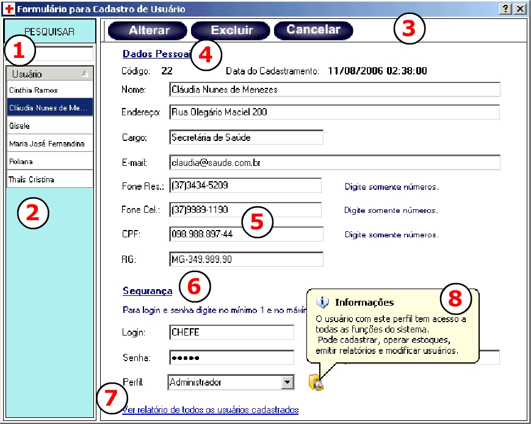

|
|
||||
|
O CADASTRO DE USUÁRIOS Para se poder usar o SICEP 1.0 é necessário que se tenha
um cadastro efetuado dentro do Cadastro de Usuários. Quando as informações forem
ser salvas existirá o pedido para a definição do grau de acesso que este usuário
poderá chegar dentro do sistema. Este grau de acesso é o chamado Perfil, existem
quatro perfis, estes são os abaixo descritos:
ADMINISTRADOR: Tem acesso a todas funções do sistema. Pode alterar, excluir ou inserir
novos usuários, pacientes, micro-áreas, materiais de consumo e medicamentos. Pode
operar os estoques da Policlínica e também Secretaria além de ter acesso as funções
utilitárias do Menu Arquivo, como Backup e ferramentas.
USUÁRIO DA SECRETARIA: Tem acesso somente as funções pertinentes a secretaria. Sendo
assim pode cadastrar pacientes e operar o estoque da secretaria.
USUÁRIO DA POLICLÍNICA: Tem acesso somente as funções pertinentes a policlínica.
Sendo assim pode cadastrar pacientes e operar o estoque da policlínica.
FUNCIONÁRIO COMUM: Não tem acesso a nenhuma função do sistema. Este perfil existe
para que o o cadastro de usuário possa ser flexível para um possível cadastro de
funcionários. A TELA DE CADASTRO DE USUÁRIOS
 Oriente-se pelos números exibidos na figura para
visualizar suas funções explicadas: |
||||
|
|